Synthesizing Speech from Intracranial Recordings with Conditional Flow Matching
Neural speech decoders are usually trained to regress audio features from brain
activity, which averages over everything the recording cannot pin down and yields blurry,
muffled speech. We instead train a conditional flow-matching model that transports Gaussian
noise to a speech spectrogram, guided by the neural data; the usual regression decoder turns
out to be the special case of a flow trained only at its first step. Below are reconstructions
from stereo-EEG in two speaking participants and from intracortical Utah arrays in a
participant with dysarthria.
Pipeline
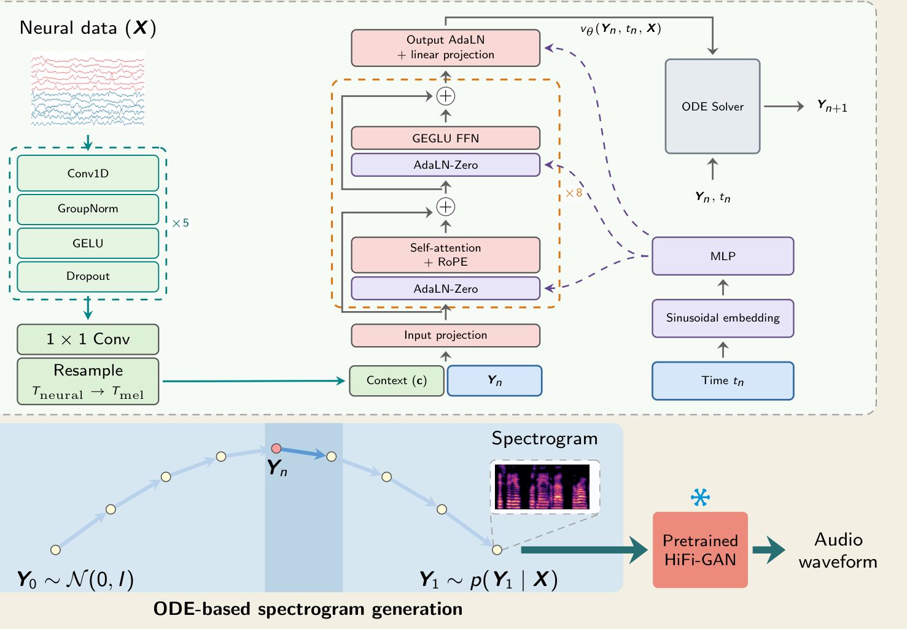
A dilated-CNN encoder maps the neural data to frame-aligned context; a diffusion
transformer predicts the velocity at each Euler step (8 steps); a frozen vocoder renders audio.
In every example, rows share one colour scale; words
in red are Whisper transcription errors against the reference, and
WER is per utterance. All spectrograms and audio are pitch-shifted for de-identification.
Utah arrays: dysarthric participant
Public dataset of Wairagkar et al. (2025): four Utah arrays in ventral precentral
gyrus. Held-out day 172; our decoder is strictly causal. The target is text-to-speech of the cue
aligned to the attempted speech, so the reference transcript is the cue itself.
“You can let them in now.”
day 172, trial 5 · our WER 0.00
TargetTTS of the cue
ReferenceYou can let them in now.
Wairagkar et al.released online audio
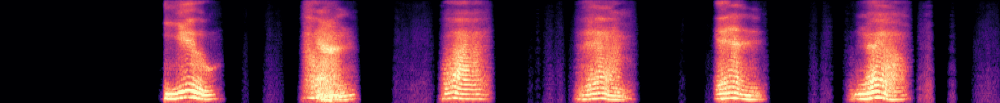
Whisperyou can buy them in mailWER 0.33
CNN-DiT (MSE)same network, regression loss
Whisperyou can let them in now WER 0.00
Oursconditional flow matching
Whisperyou can let them in now WER 0.00
“I think some people are waiting for us.”
day 172, trial 7 · our WER 0.12
TargetTTS of the cue
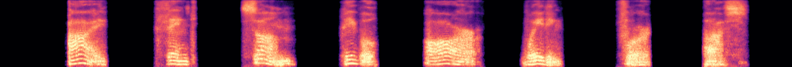
ReferenceI think some people are waiting for us.
Wairagkar et al.released online audio
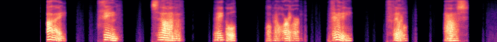
Whisperi think some people are reallyfeelingasiftheyareWER 0.75
CNN-DiT (MSE)same network, regression loss
Whisperi think some people are wanting for us WER 0.12
Oursconditional flow matching
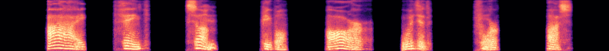
Whisperi think some people are witted for us WER 0.12
“He sold his old clothes for money.”
day 172, trial 0 · our WER 0.29
TargetTTS of the cue
ReferenceHe sold his old clothes for money.
Wairagkar et al.released online audio
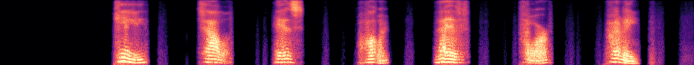
Whisperhe tells his horrorlives for prettyWER 0.57
CNN-DiT (MSE)same network, regression loss
Whisperhe solvedas old as for my.WER 0.71
Oursconditional flow matching
Whisperhe starred his old clitics for money WER 0.29
Stereo-EEG: speaking participants
Each trial is one sentence read aloud and then repeated from memory. To protect
the participants, only pitch-shifted spectrograms are shown, without audio. With no
ground-truth transcripts, the reference is Whisper's decode of the vocoded ground-truth
spectrogram. Trials are the best, median and worst by our per-utterance WER among held-out
trials with at least five distinct reference words (leave-one-block-out cross-validation).
Participant NZ0 median WER of ours over 114 trials: 0.87
Best
our WER 0.00 · 6.4 s
Ground truth
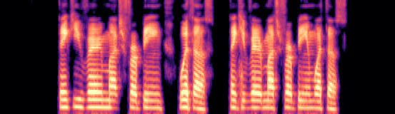
Referencethank you very much for being with us thank you very much for being with us
Wairagkar et al.our re-implementation
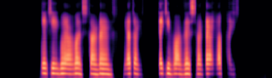
Whisperthank you for listeningyep thank you for listeningbyebyeWER 0.62
CNN-DiT (MSE)same network, regression loss
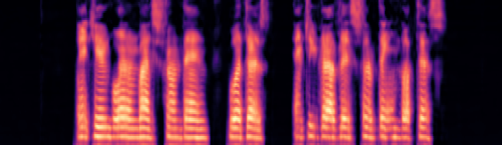
Whisperthank you very much fromthen with us and you canhaveatleastsomethingaboutthisWER 0.62
Oursconditional flow matching
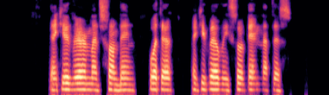
Whisperthank you very much for being with us thank you very much for being with us WER 0.00
Median
our WER 0.87 · 17.7 s
Ground truth
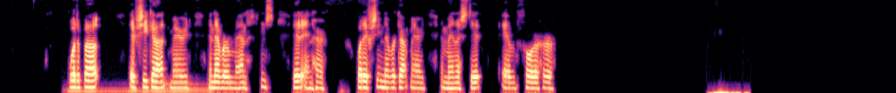
Referencewhat about if she got married and never managed it in her what if she never got married and managed it for her
Wairagkar et al.our re-implementation
WhisperyouWER 1.00
CNN-DiT (MSE)same network, regression loss
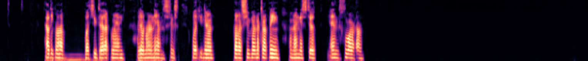
Whisperhowdybob what youdidupthereidontknowhowtoanswerthisbutyouknowbobiseewheremycarsbeing and ineedtoendthisfloorupWER 1.30
Oursconditional flow matching
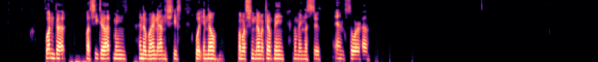
Whisperonegotwhat she got meansanumber and sheswhatyouknowbut what she never keptbeingwhatmadeussickandsoreWER 0.87
Worst
our WER 2.12 · 11.3 s
Ground truth
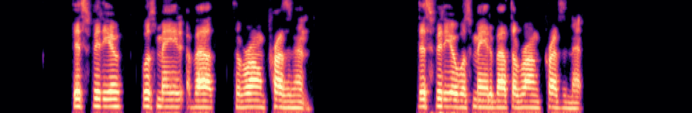
Referencethis video was made about the wrong president
Wairagkar et al.our re-implementation
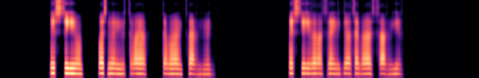
Whisperthis deal was made tohave the righttohaveanamethisdealismadetohavetherighttohaveanameWER 2.50
CNN-DiT (MSE)same network, regression loss
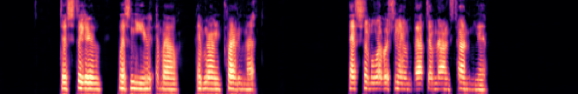
Whisperthis video was mutedwhileiwaswritingthatthatssomeofwhatwereseeingafteralongtimehereWER 2.12
Oursconditional flow matching
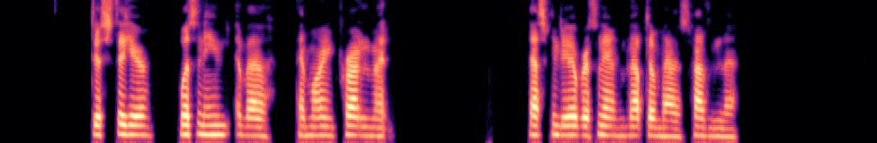
Whisperjusttohearlistening about andmoreimportantthanasking the overthenetandnottomattermorethanthatWER 2.12
Participant NZ1 median WER of ours over 122 trials: 0.93
Best
our WER 0.07 · 8.2 s
Ground truth
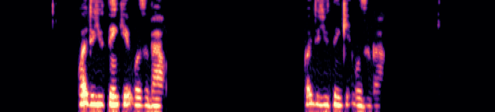
Referencewhat do you think it was about what did you think it was about
Wairagkar et al.our re-implementation
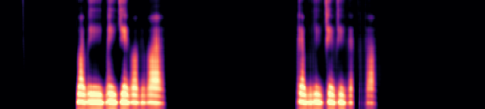
WhisperwgtvWER 1.00
CNN-DiT (MSE)same network, regression loss
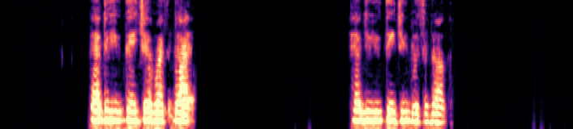
Whisperhow do you teachhimwhatsrighthowdo you teachhimwhatsenoughWER 0.79
Oursconditional flow matching
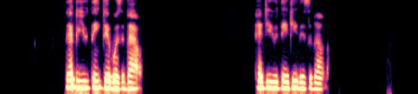
Whisperwhat do you think it was about what do you think it was about WER 0.07
Median
our WER 0.93 · 8.2 s
Ground truth
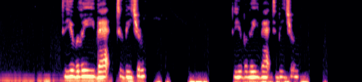
Referencedo you believe that to be true do you believe that to be true
Wairagkar et al.our re-implementation
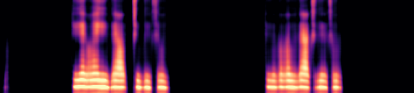
Whisperyougetwhat you gottogetthroughyougetwhat you got to getthroughWER 1.00
CNN-DiT (MSE)same network, regression loss
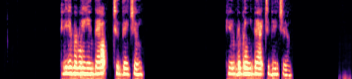
Whisperandwerebringing you back to naturewerebringing you back to natureWER 0.86
Oursconditional flow matching
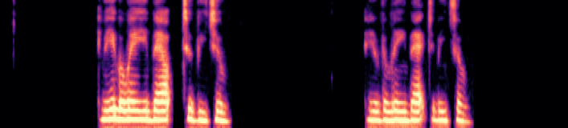
Whisperandhewillleanback to metoohewillleanback to metooWER 0.93